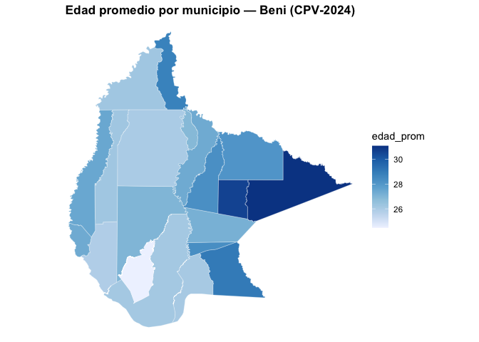

censosbo proporciona acceso programático a los microdatos de los censos de población de Bolivia: 1976, 1992, 2001, 2012 y 2024. Los datos se descargan bajo demanda, se guardan en caché local y se pueden consultar con dplyr, Apache Arrow o DuckDB. Contiene además diccionarios de datos, funciones para comparación temporal entre censos, los datos agregados del CPV-2024 por manzano y comunidad, y generación de mapas.
Instalación
# install.packages("remotes")
remotes::install_github("lab-tecnosocial/censosbo")
# Con las viñetas incluidas, para poder leerlas con vignette("introduccion").
# Tarda algo más porque las construye; también se leen online, en el enlace de abajo.
remotes::install_github("lab-tecnosocial/censosbo", build_vignettes = TRUE)Al actualizar a una versión que corrige los datos —no solo el código— conviene borrar el caché para que se vuelvan a descargar:
Censos disponibles
| Año | Función | Registros | Columnas | Disco (Parquet) | RAM (aprox.)¹ |
|---|---|---|---|---|---|
| 1976 | get_poblacion_1976() |
4,613,419 | 48 | 46 MB | ~890 MB |
| 1976 | get_viviendas_1976() |
1,158,482⁴ | 29 | 5 MB | ~135 MB |
| 1992 | get_personas_1992() |
6,420,792 | 58 | 99 MB | ~1,5 GB |
| 1992 | get_viviendas_1992() |
1,701,168⁴ | 47 | 20 MB | ~330 MB |
| 1992 | get_mortalidad_1992() |
1,706,107 | 17 | 11 MB | ~125 MB |
| 2001 | get_personas_2001() |
8,274,325 | 70 | 135 MB | ~2,5 GB |
| 2001 | get_viviendas_2001() |
2,281,022⁴ | 42 | 21 MB | ~390 MB |
| 2012 | get_personas_2012() |
10,059,856 | 41 | 120 MB | ~1,7 GB |
| 2012 | get_viviendas_2012() |
3,159,350⁴ | 35 | 26 MB | ~455 MB |
| 2012 | get_emigracion_2012() |
489,559 | 9 | 4 MB | ~20 MB |
| 2012 | get_discapacidad_2012() |
342,929 | 11 | 3 MB | ~17 MB |
| 2024² | get_personas_2024() |
11,365,333 | 119 | 282 MB | ~5,6 GB |
| 2024² | get_viviendas_2024() |
4,480,201⁴ | 48 | 55 MB | ~1,0 GB |
| 2024² | get_emigracion_2024() |
500,914 | 8 | 2 MB | ~39 MB |
| 2024² | get_mortalidad_2024() |
382,731 | 10 | 2 MB | ~33 MB |
| 2024³ | get_unidades_2024() |
268,604 | 9 | 2 MB | ~16 MB |
| 2024³ | get_fichas_2024() |
150,744 | 199 | 15 MB | ~230 MB |
¹ Tamaño al cargar la tabla completa con collect() sin filtros. Por eso el formato Arrow es el predeterminado: para el país entero, get_personas_2024() no cabe cómodamente en RAM, pero sí se puede filtrar y agregar sobre el Parquet. ² Persona 2024 está particionada en 9 archivos por departamento (4–77 MB cada uno). Disco y RAM muestran el total; en la práctica se descarga solo el/los departamentos necesarios. ³ Datos agregados por manzano urbano y comunidad rural (no microdatos), del geoportal del INE. Ver la sección siguiente. ⁴ Viviendas en el universo oficial del INE, que es lo que devuelven por defecto. La entidad cruda de REDATAM trae además registros de personas censadas en la calle o en tránsito, que no son viviendas: universo = "todos" los incluye (10.287 más en 2024). Ver tipos_vivienda().
El formato Arrow (por defecto) mantiene los datos en el disco hasta que ejecutas collect(). Las tablas del CPV-2024 se pueden unir por la clave idep + iprov + imun + i00 (identificador de hogar).
Uso rápido — CPV-2024
library(dplyr)
library(censosbo)
# Grupos quinquenales de edad por sexo, Pando
get_personas_2024(departamento = "Pando", verbose = FALSE) |>
filter(!is.na(p26_edad), !is.na(p25_sexo)) |>
mutate(grupo_edad = (p26_edad %/% 5) * 5) |>
count(grupo_edad, p25_sexo) |>
collect() |>
etiquetar_valores() |>
arrange(grupo_edad) |>
head(6)
#> # A tibble: 6 × 3
#> grupo_edad p25_sexo n
#> <dbl> <fct> <int>
#> 1 0 Mujer 6091
#> 2 0 Hombre 6090
#> 3 5 Hombre 7894
#> 4 5 Mujer 7522
#> 5 10 Mujer 7590
#> 6 10 Hombre 7937Manzanos y comunidades — el nivel más fino del CPV-2024
Los microdatos llegan hasta el municipio (343 unidades). El geoportal del INE publica además una ficha resumen por unidad censal: 268.604 manzanos urbanos y comunidades rurales, con 194 indicadores cada una.
# Universo de unidades: población, viviendas y si tienen ficha
get_unidades_2024(departamento = "Pando", as = "tibble", verbose = FALSE) |>
select(codigo, nombre, area, personas, viviendas, ficha) |>
head(4)
#> # A tibble: 4 × 6
#> codigo nombre area personas viviendas ficha
#> <chr> <chr> <int> <int> <int> <lgl>
#> 1 10003180138-D HACIENDA/FINCA/ESTANCIA 2 108 25 TRUE
#> 2 10037547105-D LA TRIBU 2 175 64 TRUE
#> 3 10086625097-D PALMAR 2 136 40 TRUE
#> 4 10117934728-D HACIENDA/FINCA/ESTANCIA 2 290 62 TRUE
# Los 194 indicadores, y un mapa a nivel de manzano
get_fichas_2024(municipio = "Sucre", as = "tibble") |>
mutate(pct_internet = 100 * tic_internet / tic_total) |>
mapa_man("pct_internet", municipio = "Sucre",
titulo = "Hogares con internet (%) — Sucre, 2024")El INE no libera la ficha de las unidades con poca población, por reserva estadística: eso afecta al 47 % de los manzanos, pero la ficha cubre igualmente el 92 % de la población. La columna ficha indica cuáles la tienen.
Detalles en el artículo Manzanos y comunidades.
Diccionario de variables
# Buscar variables del CPV-2024
codebook(buscar = "educa") |> select(variable, tabla) |> as_tibble()
#> # A tibble: 23 × 2
#> variable tabla
#> <chr> <chr>
#> 1 p38_asiste persona
#> 2 p39_tipoest persona
#> 3 p40_lee persona
#> 4 p41a_nivel persona
#> 5 p41b_curso persona
#> 6 p41a_nivel_act persona
#> 7 p41b_curso_act persona
#> 8 nivel_edu persona
#> 9 aestudio persona
#> 10 asiste persona
#> # ℹ 13 more rows
# Ver códigos de una variable
codebook_valores("p25_sexo") # CPV-2024
#> codigo etiqueta
#> 1 1 Mujer
#> 2 2 Hombre
codebook_valores("P24", anio = 2012) # Censo 2012
#> # A tibble: 2 × 2
#> codigo etiqueta
#> * <chr> <chr>
#> 1 1 Mujer
#> 2 2 Hombre
# Codebook para censos históricos. `buscar` ignora tildes y mayúsculas:
# "instruccion" encuentra "Nivel más alto de instrucción que aprobó"
codebook_2012(buscar = "instruccion") |> select(variable, etiqueta) |> as_tibble()
#> # A tibble: 1 × 2
#> variable etiqueta
#> <chr> <chr>
#> 1 P37A_NIVELNUE Nivel más alto de instrucción que aprobó
# Ojo: cada censo usa su propia redacción. En 1992 la variable de sexo es P03,
# y su etiqueta no contiene la palabra "sexo"
codebook_1992(variable = "P03") |> select(variable, etiqueta) |> as_tibble()
#> # A tibble: 1 × 2
#> variable etiqueta
#> <chr> <chr>
#> 1 P03 Es hombre o mujerBuscar por tema
Las 809 variables de los cinco censos están agrupadas en 21 temas, tomados del catálogo oficial del INE. vars_tema() devuelve los nombres listos para descargar:
censo_temas(tabla = "persona") |> select(tema, etiqueta, n_variables) |> head(5)
#> tema etiqueta n_variables
#> 1 ubicacion_geografica Ubicación geográfica 4
#> 2 identificacion Identificación de registros 1
#> 3 poblacion Población 7
#> 4 ciudadania Ciudadanía 2
#> 5 salud_seguridad_social Salud y seguridad social 9
vars_tema("educacion", tabla = "persona")
#> [1] "p38_asiste" "p39_tipoest" "p40_lee" "p41a_nivel"
#> [5] "p41b_curso" "p41a_nivel_act" "p41b_curso_act" "aestudio"
#> [9] "asiste" "gedadedu" "nivel_edu"
get_personas_2024(
departamento = "Cochabamba",
variables = vars_tema("educacion", tabla = "persona")
)A quién se le preguntó cada cosa
La columna universo evita el error más común en análisis censal: usar el denominador equivocado. nivel_edu, por ejemplo, está construida sobre las personas de 19 años o más, no sobre toda la población.
codebook(c("p40_lee", "p54_hvtot", "nivel_edu"), tabla = "persona") |>
select(variable, universo) |> as_tibble()
#> # A tibble: 3 × 2
#> variable universo
#> <chr> <chr>
#> 1 p40_lee personas_5_mas
#> 2 p54_hvtot mujeres_12_mas
#> 3 nivel_edu personas_19_masY como está en los cinco censos, get_temporal() avisa cuando una variable armonizada no se preguntó a la misma población en todos los años pedidos:
get_temporal(variables = "sabe_leer", anios = c(1992, 2001, 2024))
#> ! `sabe_leer` no se preguntó a la misma población en todos los censos:
#> 1992: personas de 6 años o más
#> 2001: personas de 4 años o más
#> 2024: personas de 5 años o más
#> i Añade "edad" a `variables` y filtra `edad >= 6` antes de comparar.
# Hacerle caso: pedir `edad` es lo que permite igualar el universo
get_temporal(variables = c("sabe_leer", "edad"), anios = c(1992, 2001, 2024)) |>
filter(edad >= 6, !is.na(sabe_leer)) |>
group_by(anio) |>
summarise(pct_alfabetizado = round(100 * mean(sabe_leer == 1), 1))Más en la viñeta Temas, o con vignette("temas") si instalaste el paquete con build_vignettes = TRUE.
Etiquetas en los resultados
get_personas_2024(departamento = "Pando", verbose = FALSE) |>
count(p25_sexo, p40_lee) |>
collect() |>
etiquetar_valores() |> # 1 → "Mujer", 2 → "Hombre"
etiquetar_variables() # "p25_sexo" → "25. Es mujer u hombre"
#> # A tibble: 8 × 3
#> `25. Es mujer u hombre` `40. Sabe leer y escribir` n
#> <fct> <fct> <int>
#> 1 Hombre Sí 60578
#> 2 Mujer Sí 52972
#> 3 Mujer No 2843
#> 4 Hombre Sin especificar 1503
#> 5 Hombre <NA> 6090
#> 6 Mujer <NA> 6091
#> 7 Hombre No 2668
#> 8 Mujer Sin especificar 1449Censos históricos
# Sexo en el censo 2012, Pando
get_personas_2012(departamento = "Pando", verbose = FALSE) |>
count(P24) |>
collect() |>
etiquetar_valores()
#> # A tibble: 2 × 2
#> P24 n
#> <fct> <int>
#> 1 Mujer 50685
#> 2 Hombre 59751
# API genérica: el mismo argumento `anio` cubre 1976–2024
get_censo(2012, "persona", departamento = "07")
get_censo(2024, "persona", departamento = "07") # = get_personas_2024()
# Censo 1976
get_poblacion_1976(departamento = "Cochabamba")Análisis temporal
# Variables comparables entre censos
variables_armonizadas() |>
select(variable, tabla, v1976, v1992, v2001, v2012, v2024) |>
as_tibble() |>
head(8)
#> # A tibble: 8 × 7
#> variable tabla v1976 v1992 v2001 v2012 v2024
#> <chr> <chr> <chr> <chr> <chr> <chr> <chr>
#> 1 sexo persona p03 P03 P28 P24 p25_sexo
#> 2 edad persona p04 P04 P29 P25 p26_edad
#> 3 grupo_edad persona p04 P04 P29 P25 p26_edad
#> 4 parentesco persona p02 P02 P31 P23 p24_parentes
#> 5 estado_civil persona p05 P05 P48 P45 p53_ecivil
#> 6 sabe_leer persona p10 P10 P36 P35 p40_lee
#> 7 nivel_edu persona nivela P12 P39NIV P37A_NIVELNUE nivel_edu
#> 8 asistencia_escolar persona p11 P11 P37 P36 p38_asiste
# Nivel educativo en todo el país, 1976–2024 (descarga ~400 MB)
edu <- get_temporal(
variables = c("sexo", "nivel_edu"),
anios = c(1976, 1992, 2001, 2012, 2024)
)
edu |> count(anio, nivel_edu)Geografía y mapas
departamentos()
#> # A tibble: 9 × 2
#> idep nombre_dep
#> <chr> <chr>
#> 1 01 Chuquisaca
#> 2 02 La Paz
#> 3 03 Cochabamba
#> 4 04 Oruro
#> 5 05 Potosí
#> 6 06 Tarija
#> 7 07 Santa Cruz
#> 8 08 Beni
#> 9 09 Pando
provincias("Pando")
#> # A tibble: 5 × 4
#> idep nombre_dep iprov nombre_prov
#> <chr> <chr> <chr> <chr>
#> 1 09 Pando 01 Nicolás Suárez
#> 2 09 Pando 02 Manuripi
#> 3 09 Pando 03 Madre de Dios
#> 4 09 Pando 04 Abuná
#> 5 09 Pando 05 Federico Román
municipios(departamento = "Pando") |> head(5)
#> # A tibble: 5 × 6
#> idep nombre_dep iprov nombre_prov imun nombre_mun
#> <chr> <chr> <chr> <chr> <chr> <chr>
#> 1 09 Pando 01 Nicolás Suárez 01 Cobija
#> 2 09 Pando 01 Nicolás Suárez 02 Porvenir
#> 3 09 Pando 01 Nicolás Suárez 03 Bolpebra
#> 4 09 Pando 01 Nicolás Suárez 04 Bella Flor
#> 5 09 Pando 02 Manuripi 01 Puerto Ricodepartamento, provincia y municipio aceptan código o nombre en las funciones get_*. Y etiquetar_geografia() agrega los nombres legibles a los microdatos sin left_join manual:
# Filtrar por nombre (el departamento se infiere si hace falta)
get_personas_2024(departamento = "Cochabamba", municipio = "Cochabamba")
# Agregar nombre_dep / nombre_prov / nombre_mun a partir de los códigos
get_personas_2024(departamento = "Cochabamba") |>
count(idep, iprov, imun) |>
collect() |>
etiquetar_geografia()El paquete incluye geometrías sf para los 9 departamentos (geo_departamentos) y los 343 municipios (geo_municipios) de Bolivia, con su capital y superficie. Las funciones mapa_dep() y mapa_mun() generan mapas coropléticos a partir de cualquier agregación de datos del censo, y mapa_man() baja hasta el manzano y la comunidad dentro de un municipio (sus geometrías se descargan al caché la primera vez).
# mapa_mun(): nivel municipal — geometrías incluidas en el paquete
personas_beni <- get_personas_2024(departamento = "Beni", variables = "p26_edad",
verbose = FALSE) |>
group_by(idep, iprov, imun) |>
summarise(edad_prom = mean(p26_edad, na.rm = TRUE), .groups = "drop") |>
collect()
mapa_mun(personas_beni, "edad_prom", departamento = "Beni",
titulo = "Edad promedio por municipio — Beni (CPV-2024)")
Gestión del caché
censosbo_cache_dir() # dónde está el caché
#> [1] "/Users/alexojeda/Library/Caches/org.R-project.R/R/censosbo"
censosbo_cache_info() # qué archivos están descargados
censosbo_cache_clear() # liberar espacio en disco y forzar la re-descargaFuentes de datos
Los microdatos originales fueron publicados por el Instituto Nacional de Estadística (INE) de Bolivia:
- CPV-2024: https://cpv2024.ine.gob.bo/index.php/principal/descargas/
- Censos históricos 1976–2012: https://www.ine.gob.bo/index.php/censos-y-banco-de-datos/censos/
- Fichas por manzano y comunidad (CPV-2024): https://geoportal.ine.gob.bo/
Nota metodológica
Los archivos originales fueron transformados a formato Parquet para una mejor distribución. El proceso de conversión varía por censo:
| Censo | Formato original | Herramienta de conversión |
|---|---|---|
| 1976 | SPSS (.sav) |
haven + arrow (R) |
| 1992 | REDATAM (.dic binario + .rbf) |
open-redatam CLI → CSV → arrow (R) |
| 2001 | REDATAM (.wxp → .dicX) |
conversión .wxp→.dicX + open-redatam CLI → CSV → arrow (R) |
| 2012 | REDATAM (.dic/.dicx binario + .ptr) |
open-redatam CLI → CSV → arrow (R) |
| 2024 | CSV delimitado por ; (~3.6 GB total) |
readr + arrow (R); persona particionada por departamento |
El formato Parquet conserva todos los registros y variables originales sin modificación de valores.
Citar
citation("censosbo")
#> To cite package 'censosbo' in publications use:
#>
#> Ojeda Copa A (2026). _censosbo: Access and Analysis of Bolivian
#> Census Microdata_. Lab TecnoSocial, Cochabamba, Bolivia. R package
#> version 2.0.1, <https://lab-tecnosocial.github.io/censosbo/>.
#>
#> A BibTeX entry for LaTeX users is
#>
#> @Manual{,
#> title = {censosbo: Access and Analysis of Bolivian Census Microdata},
#> author = {Alex {Ojeda Copa}},
#> organization = {Lab TecnoSocial},
#> address = {Cochabamba, Bolivia},
#> year = {2026},
#> note = {R package version 2.0.1},
#> url = {https://lab-tecnosocial.github.io/censosbo/},
#> }Ojeda Copa A (2026). censosbo: Paquete de R para el acceso, análisis y visualización de datos censales en Bolivia (1976-2024). Lab TecnoSocial, Cochabamba, Bolivia. R package version 2.0.1. https://lab-tecnosocial.github.io/censosbo/